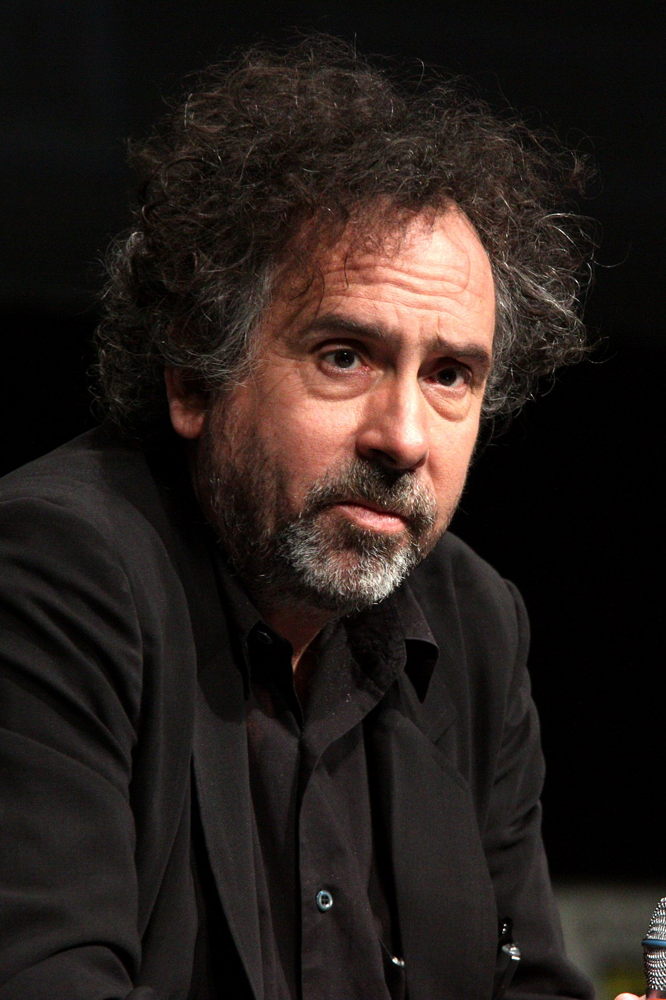
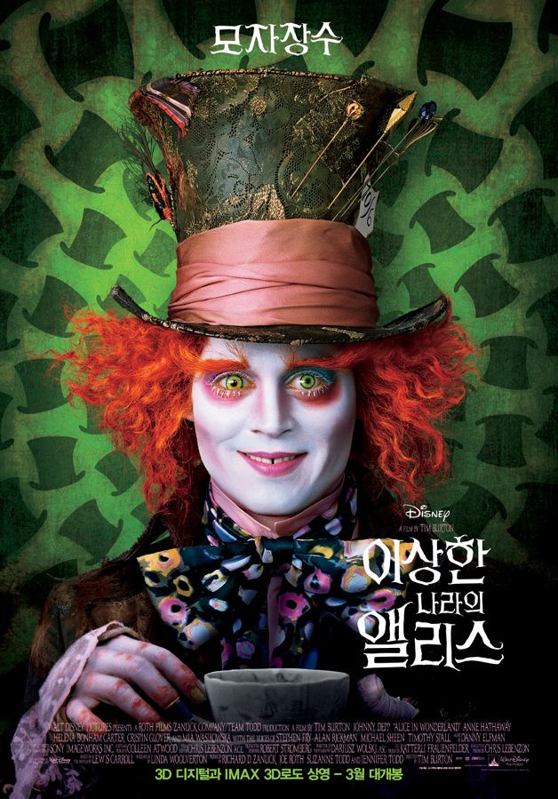

Who is Tim?
팀버튼 감독은 미국의 영화 감독이자 작가입니다.
과거 월트 디즈니 컴퍼니에서 일하다가 퇴사했으며 스톱모션 기법의 스타일과 독특한 색채, 조명을 활용하여
몽환적인 느낌을 잘 살리고 마니아층이 두터운 감독입니다.
|  | 팀버튼 감독은? | ||
| 본명 : | 티머시 월터 버튼 [Timothy Walter Burton] | ||
| 출생 : | 1958년 8월 25일 | ||
| 국적 : | 미국 캘리포니아주 버뱅크 | ||
| 직업 : | 영화 감독 및 작가 | ||
| 활동 : | 1982년~ 현재 | ||
팀버튼의 페르소나 "조니뎁"
팀버튼과 조니뎁은 1990년 영화 '가위손'으로 시작되었습니다.
조니뎁과 팀버튼의 시너지로 영화 팬들은 이 조합을 매우 좋아하며 둘은 함께 총 여덟 편의 영화를 제작했습니다.
2010년에 개봉한 이상한 나라의 앨리스는 총 10억 달러 이상의 수익 을 내며 가장 높은 성적을 기록한 영화이기도 합니다.
조니뎁과 팀버튼의 시너지로 영화 팬들은 이 조합을 매우 좋아하며 둘은 함께 총 여덟 편의 영화를 제작했습니다.
2010년에 개봉한 이상한 나라의 앨리스는 총 10억 달러 이상의 수익 을 내며 가장 높은 성적을 기록한 영화이기도 합니다.
